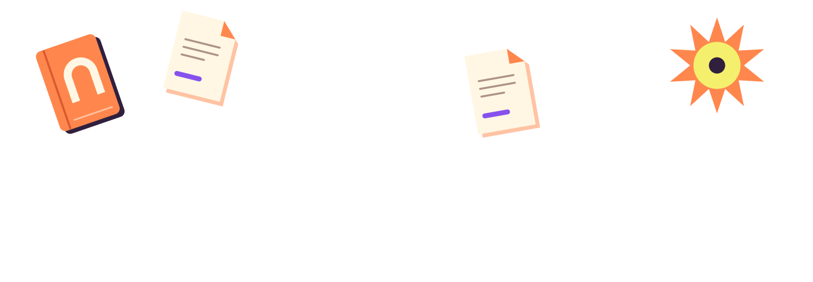
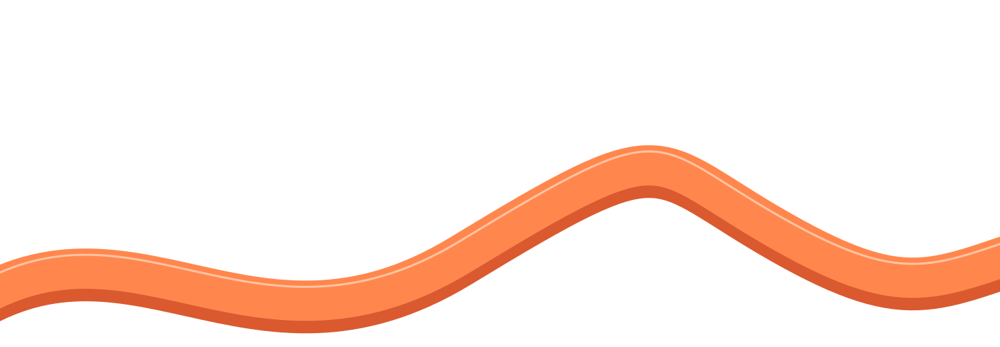
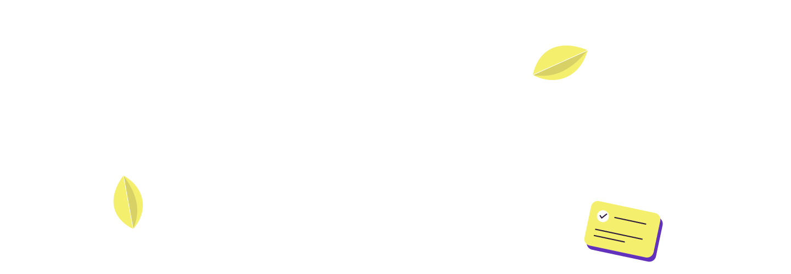

A good detail
Keep one passage to return to after the last chapter.
The Situate identity
Warmth in the welcome. Clarity in the work.
A personal world,
with a little Bend in it.




A thought. A note. A next step.A live design reference, not a released application. Every task, note and book below is fictional. Interactions run only on this page, reset on reload, and do not use AI or connected services. Light and plum samples demonstrate brand contrast, not available product themes.
01 / Identity
A rounded, open identity with room to breathe. Bend is company in the illustration, never a demand for attention.

Canonical vector · plum on paper

Reversed vector · warm white on plum
The rounded stroke paths and tangerine dot are the wordmark. Use the SVG artwork, not a typeset approximation. Preserve proportions and the open counters.
Clear space: at least half the artwork’s height on every side. Minimum display width: 100 CSS px. Do not place it over a ribbon or a busy illustration.
Situate is the system-font fallback for plain text and unavailable artwork. It is not a second logotype. Bend may accompany the mark, but does not replace its letters.
02 / Color
Warm neutrals hold the reading. Violet carries emphasis. Sky, tangerine and lemon make the illustrated world feel alive.
Everyday balance, not a mathematical quota. Keep large saturated fields in welcome and illustration areas, away from dense reading.
Ratios calculated from the token values. Normal text needs 4.5:1; large text and meaningful non-text boundaries need 3:1.
Violet is not body ink. Use violet-deep for links and selected controls; ink leads the primary actions. Keep bright violet, sky and peach as expressive fills with a verified foreground.
A separator is not a control edge. Line separates already grouped content. Control-line defines input boundaries; focus uses a 3 px contrasting ring drawn inside the control.
Front #a77bff · depth #56329b · highlight #d9c6ff · seam #7045bd. These describe the illustrated body, not a second interface palette.
03 / Typography
System fonts only. Avenir Next is used when installed, with rounded system display fallbacks and the platform’s UI font for body fallback. No font files are bundled.
Make room.
A place for the details.
The next chapter
Keep the note beside the thing it helps you do.
The books we return to often have a detail we missed the first time. Keep a passage, a question, or just a few words to find your way back.
Reading circle · Notes and possibilities
Updated in this example
Display is an accent. Tight tracking belongs in short headings, not paragraphs or controls. Keep useful body copy at 16 px and limit long reading to about 65 characters per line.
Hierarchy without shouting. Sentence case, medium weight, generous separation. Eyebrows are short section markers, not the default treatment for labels or instructions.
04 / Rhythm & shape
A small spacing scale keeps neighboring things connected, with optical adjustments for notes and panels. Bigger gaps make room for a change of subject.
8 px · labels, small objects
12 px · fields, quiet actions
28 px · panels; 15 px notes
32 px · expressive fields
99 px · primary action
Comfortable / 60 px minimum rows
24–32 px panel inset; 16 px between reading groups.
Compact / 48 px minimum rows
16–24 px panel inset; keep interactive targets at least 44 px.
Illustration strokes scale with the artwork; they are not interface strokes.
05 / Everyday work
Tasks, notes and documents share the same calm surface. No floating mascot, repeated celebration, or color-coded urgency in routine work.
Interactive specimen · fictional content · changes stay on this page
The next conversation starts here.
Check and uncheck tasks; open the note and document. No completion animation interrupts the list.
06 / Components & states
One strong action at a time. Name the result. State is expressed through words and shape as well as color.
Primary / secondary / text · select to compare feedback
Static hover, focus and pressed specimens. The disabled action cannot run.
Current name: Reading circle
Labels carry the meaning. A decorative dot alone does not.
Action samples only; no note is changed.
Light surface
Keep a note close to the work it belongs to.
See the reading area ↗Plum surface
Use a dark field for a short, expressive moment.
See the scene collection ↗07 / Bend
An open violet arch, fine facial marks and a little depth. Expression follows the situation, not an imagined need for friendship.
The same resting pose makes expression changes comparable. Keep the face’s small marks restrained; never stretch the eyes into the whole character.
Use the pose to show the relationship: reading a book, carrying a stack, or indicating the thing that needs attention.
Change pose or expression without playing motion. Replay is always optional.
Static comparisons. Use the full character at 64 CSS px or larger. The 32 and 48 px samples are diagnostic inspections only, not approved icon sizes. Never use an expression as the only status label.
A separate small mark, not a shrunken illustration. One color, no arms or depth. Keep it still beside everyday content; let only the eyes change while something loads.
SVG: 16–32 px. ASCII: five columns, three lines, about 30 × 30 px. Its fixed-width characters change in discrete frames; the arch stays still.
Loading / low energy
No note open.
Keep one passage to return to after the last chapter.
Local simulation with a four-second wait. Complete, fail or cancel it sooner to compare states. Pausing motion never pauses the operation.
The loading example needs JavaScript and the Mini Bend library. Static artwork remains available.
08 / Situations
Give expressive moments a composition. Let quiet moments use only what helps. The character is never the only explanation of a result.

A book, a note, a moment to follow a thought. Leave the content itself still.

The objects show what is being organized. A small settle is enough to bring them into place.
Interactive situation specimens · simulated results, not product availability
“Give the books on my shortlist a place for reading status.”
Three fictional titles from the Bookshop shortlist.
Nothing made yet.
Two notes mention the next book. Choose one to keep beside the shortlist.
Try opening the example again, or read the text instead.
No tears, guilt, victory shower or alarming red scene. A choice stays with the person; a recovery message names the problem and offers a concrete next step.
09 / Illustration
A small family of objects, used in relationship. Sweeping ribbons connect the scene; folded planes and offset edges give it substance.

One or two broad curves. Crop at the scene edge, not at Bend’s face. Keep the path out of reading areas.
Books, notes and cards refer to the work. Use a few at varied sizes, not a cloud of generic sparkles.
Let Bend stand on a ribbon, hold a book or point toward a choice. Preserve the open arch and give the face breathing room.
Objects, background elements, compositions and character resources. See the catalogue for source files and reuse guidance.
10 / Motion
Character gestures are finite and replayable. Optional slow ribbon drift belongs only to the welcome panorama. Mini Bend’s eyes move only while loading. The page-wide control pauses all three, not the work itself.
Meaning does not wait for motion. A reading list appears immediately. The optional gesture acknowledges it, never completes it. Routine task checkboxes stay quiet.
Still is a complete experience. Reduced motion takes effect live. It stops gestures without removing information. Hidden tabs, offscreen scenes and open dialogs pause motion; static comparisons never animate. Optional welcome drift takes 14 seconds per cycle, with no repeated character gesture.
Let the person’s work be the interesting part.